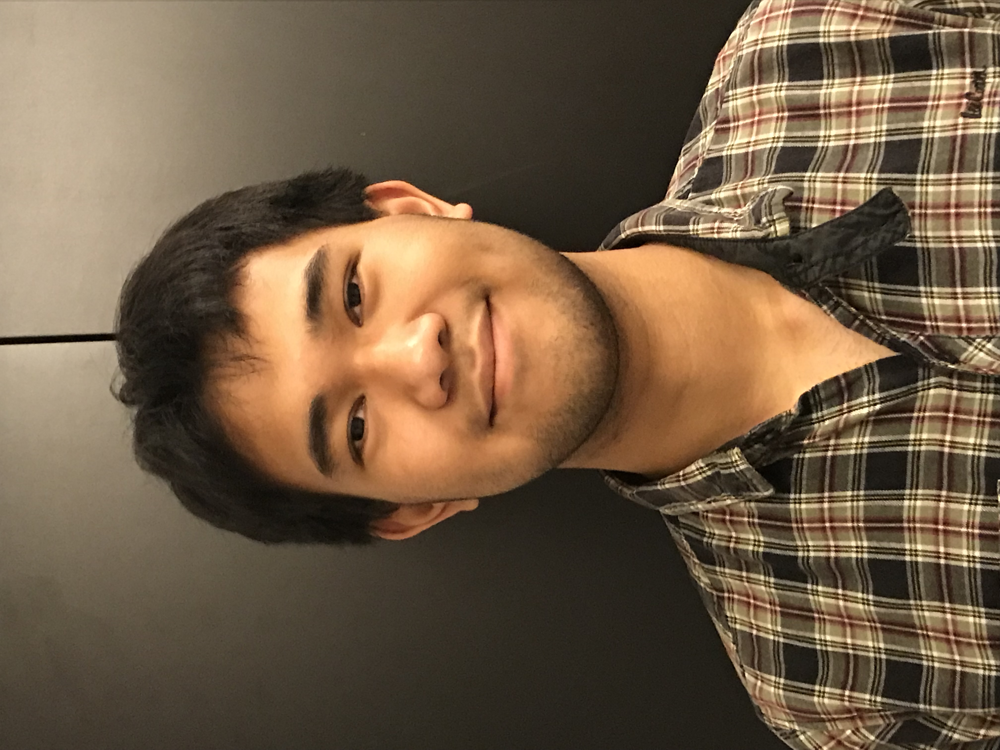

Sesario Imanputra
sesario.hiroyuki99@gmail.com
Portfolio
- EYE Center Backend Engineering
- EYE Center for Children’s Vision, Learning and Technology is a service that diagnoses and
treats children with visual dysfunction. My role is to manage the back-end system, ensure that all
HIPAA compliances are met, and create more API services if needed. Managing includes
performance testing REST API using a mixture of Jmeter and Jenkins, redesigning API calls to
support heavy loads of users, scaling up AWS environment using data generated from testing
and CloudWatch, and merging new web applications to the current AWS environment. Tasks
related to complying with HIPAA includes encrypting the database at rest and in transit, setting
reverse proxy with nginx, and implementing data recovery procedures.
- Download Documentation
- 68k Disassembler
- Project converts a specified memory's content to a listing of valid assembly language instructions to 68k assembly langauge. The program begins by parsing the op-code word of the instruction and then decides how many additional words of memory need to be read in order to complete the instruction. The result of the conversion is printed out as ASCII format, which is done by converting binary information to hex. The program accepts these opcodes as valid: NOP, MOVE, MOVEM, ADD, SUB, MULS, DIVU, LEA, AND, NOT, Bcc, JSR, RTS, AND BRA. The program accepts these effective addressing as valid: data register direct, address register indirect/direct, immediate addressing, pre/post increment addressing, and word/long addressing.
- Download Documentation
- Risk Analysis of Yahoo! Data Breach
- The following paper takes an in-depth analysis of Yahoo's infamous data breach under the scope of cyber-security. With the context of cyber-security, much focus will placed on how Yahoo's vulnerabilities has evolved from threats to vulnerabilties given the timeline of the attack. The paper will end by itemizing control objectives that would have mitigated vulnerabilties and suggest control improvements on top of Yahoo's response to the incident.
- Download Documentation
- Distributed Systems: Challenges in Scalable Systems Design
- A collection of highlighted projects that demonstrates solutions for challenging scalable systems concepts, such as horizontal vs vertical database partitioning, idempotence, workflow systems, etc. The project selected are higlights as they demonstrate an excellent understanding in scalable enterprise systems. The topics of the highlighted projects are: availability messaging, fulfillment planning, database partitioning, and optimizing API performance.
- Download Documentation
- Usability and User-Centered Reasearch on Foundry10
- The research is focused in the interaction between academic users and Foundry10’s website with the to create a new optimized iteration of the website. Methods covered in this research includes hunt statement, stakeholder interviews, persona analysis, competitor analysis, usability test, and a mockup.
- Download Documentation
- Redesigning UW's Interactive Registration System
- Project involves the design and rapid prototyping of an actual application interface using methods that support the PACT (People, Activities, Contexts and Technologies) approach to interface design. The goal is to iterate the application, such that it meets the real needs of students.
- Download Documentation
- Architecting a Ride Sharing Service for Automated Vehicles
- Project is based on progress during a design and analysis system workshop given using an idea of an application as the base case. In this case, our base case applicatoin is a ride sharing service, that exclusively uses automated vehicles (i.e. self driving cars). The document covers various stages of implementing a system, such as FR, NFR, domain models, use cases, ERD, wireframing, UML class diagram, sequence diagram, activity diagram, DFD Diagram, architectureal styles, and threat modelling
- Download Documentation
- ECO Apparell: Developing a Database Related Application
- Project delivers a completed database-related application that uses important concepts covered in the analysis, design of a physical and manipulation and retrieval of data for a database. The application for this project is a website which catalogues eco-friendly apparels by leading companies in the clothing industry. AWS is used to host the application, which includes an Apache HTTP server and a mySQL database.
- Download Documentation